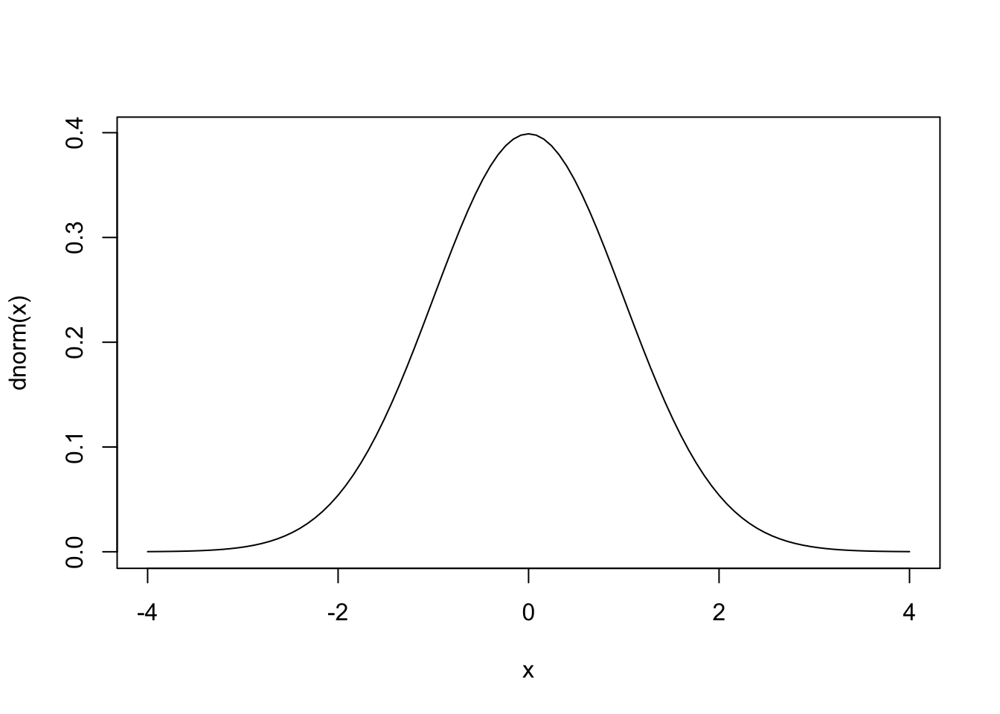
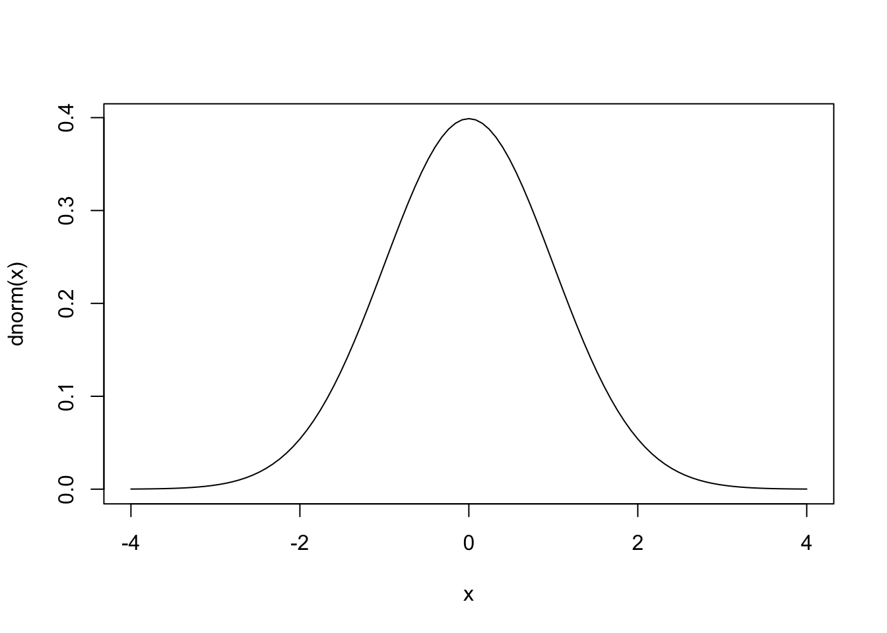
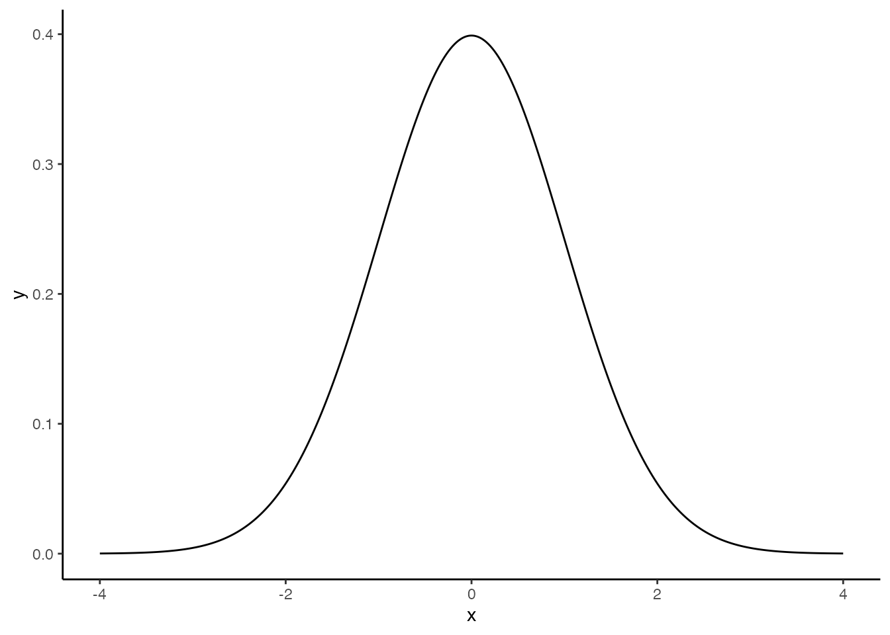
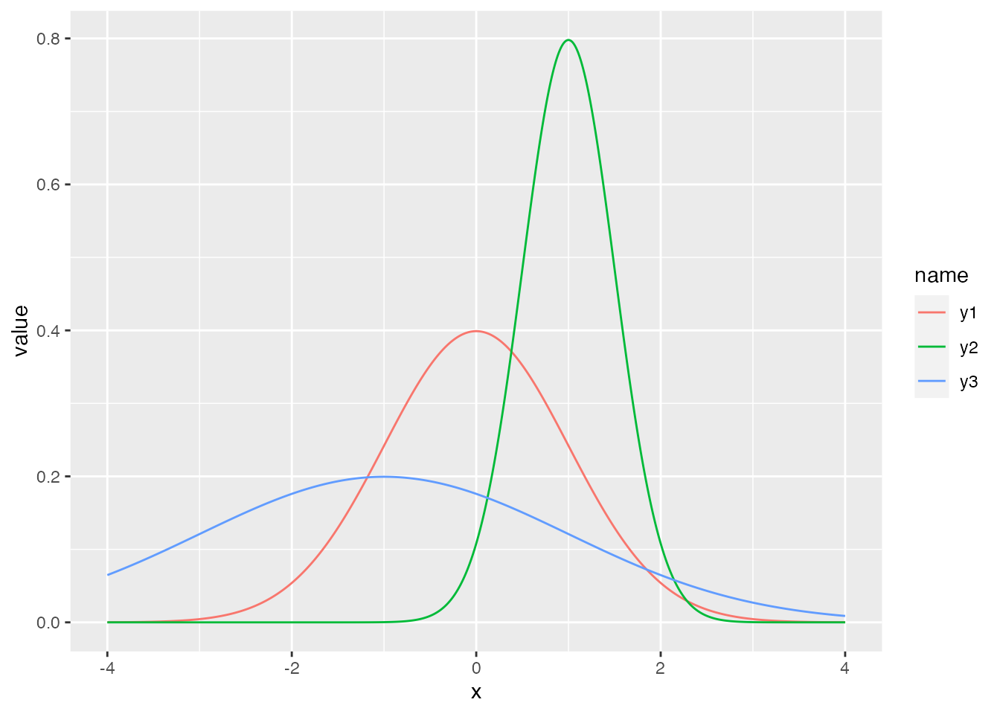
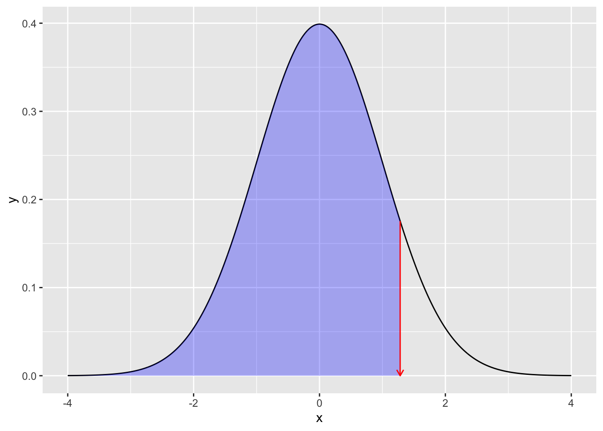
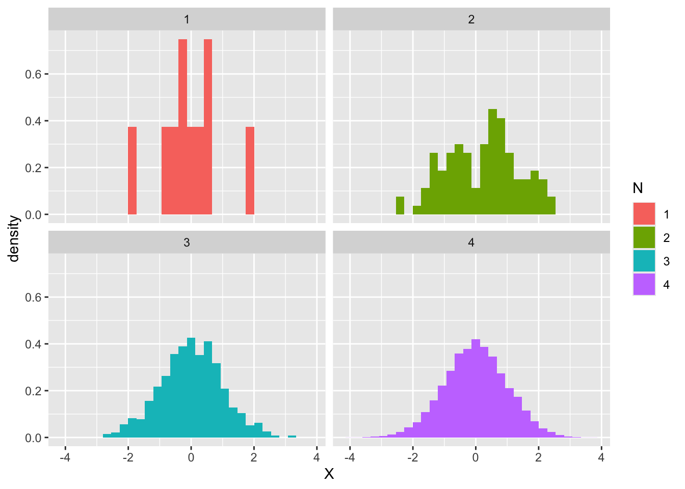
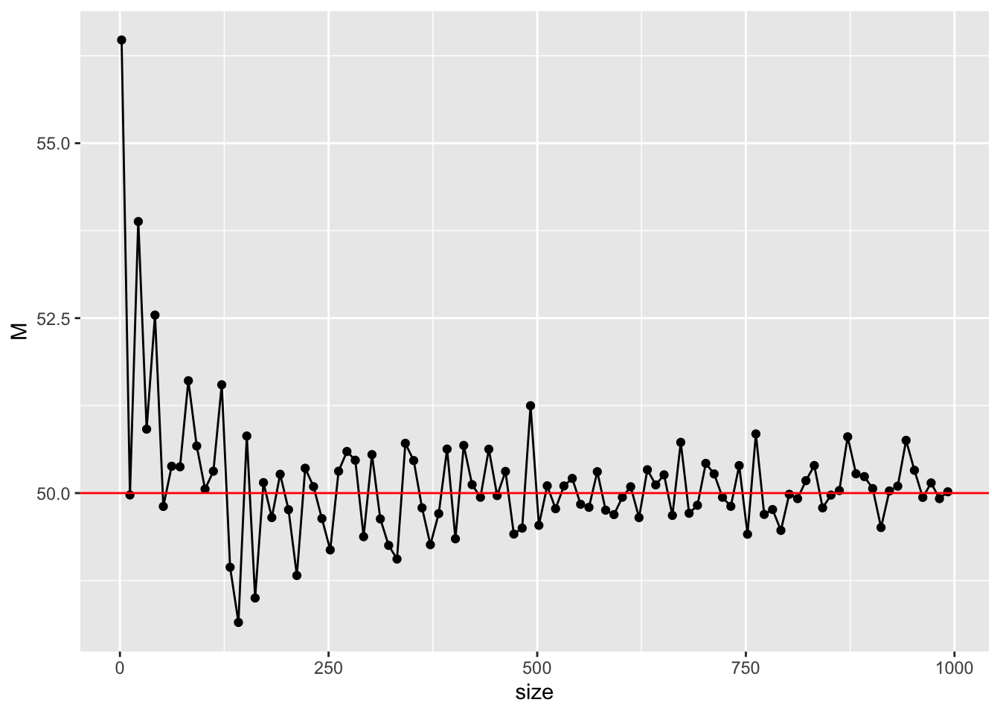

# 標準のプロット関数，curve
curve(dnorm(x), from = -4, to = 4)
Statistics and probability have a close relationship. Firstly, gathering a lot of data allows us to see overall trends that are not observable in individual cases. One way to express these trends is by using the concept of probability. Next, even when there isn’t much data, when we consider a selection taken from a larger whole as a sample, we contemplate how the sample reflects the properties of the whole. In this case, we will use the concept of probability to express the randomness of selecting a part from the overall tendency.
Finally, even with machines that behave in predicted and principled ways, there may be consistent discrepancies or random errors that can only be perceived as incidental in a practical reality. The former can be addressed by adjusting the machine, but the latter requires considering the probabilities that randomness follows.
Psychology conducts research on humans, but since it’s not possible to examine all individuals at once, we often collect samples and conduct surveys or experiments (the second case). In data science, the datasets frequently run into tens of thousands of records, but in the case of psychology, it is quite common to have only a few to dozens of records. Furthermore, even if we’re able to theoretically model psychological tendencies, there are likely inaccuracies in actual behavior (the third case). From this, we can assume that data obtained in psychology can be thought of as random variables, and it is used in conjunction with inferential statistics to infer the characteristics of a population from a small sample.
In a mathematical sense, the concept of probability is defined based on the accumulation of intricate concepts like sets, integrals, and measures1. We will not delve into details here; for the moment, we need to understand probability just as “a representation of the likelihood of a particular outcome occurring, expressed as a real number between 0 and 1”. Under this definition, we can interpret probability as “the proportion of occurrences among all possible combinations”. Additionally, it can also be interpreted as “the degree of belief about the strength of truth, subjectively weighted”2. You might have thought that the probability you’ve learned so far is a tedious task of writing out all permutations and combinations. However, statements like “I’m pretty sure it’s correct about 80-90% of the time,” can also be treated as a kind of probability. Thus, probability is a very familiar concept with a wide range of applications.
One tip for advancing your understanding is to think of probability in terms of area. Imagine the entire space of all possible situations, and how the event occurs as a proportion of that space: this is the concept of probability. For example, Hiraoka (2009) consistently explains it in terms of area throughout his book. By using this explanation, it becomes easier to understand concepts like conditional probability.
However, it’s crucial to clearly distinguish between probability variables and their realized values. Values included in datasets or spreadsheets are merely the realized values of probability variables, while probability variables refer to the variables themselves in their uncertain state. A die is a probability variable, whereas the number it lands on is the realized value of that probability variable. Psychological variables are probability variables, with any data obtained being their realized values. We learn about the characteristics of variables through these realized values and use them to make inferences about the broader picture.
You might find it challenging to discuss abstract entities beyond the data in front of you. In fact, it is tough for everyone, and understanding probabilities accurately is particularly difficult. However, through functions implemented in computer languages like R, we can gradually begin to understand these concepts in a more concrete and hands-on manner.
The realized values of a random variable follow a probability distribution. A probability distribution is a comprehensive overview that represents how likely each value is to occur and is typically expressed as a function. Although the names differ depending on whether the values are continuous or discrete, the function for a continuous probability distribution is known as a probability density function and for a discrete probability distribution, it’s referred to as a probability mass function.
R provides several built-in functions related to probability from the outset. For the most famous probability distribution, the normal distribution, there are functions like the following.
# 標準のプロット関数，curve
curve(dnorm(x), from = -4, to = 4)
# ggplot2を使ってカッコよく
library(tidyverse)── Attaching core tidyverse packages ──────────────────────── tidyverse 2.0.0 ──
✔ dplyr 1.1.4 ✔ readr 2.1.5
✔ forcats 1.0.0 ✔ stringr 1.5.1
✔ ggplot2 3.5.0 ✔ tibble 3.2.1
✔ lubridate 1.9.3 ✔ tidyr 1.3.1
✔ purrr 1.0.2
── Conflicts ────────────────────────────────────────── tidyverse_conflicts() ──
✖ dplyr::filter() masks stats::filter()
✖ dplyr::lag() masks stats::lag()
ℹ Use the conflicted package (<http://conflicted.r-lib.org/>) to force all conflicts to become errorsdata.frame(x = seq(-4, 4, by = 0.01)) %>%
mutate(y = dnorm(x)) %>%
ggplot(aes(x = x, y = y)) +
geom_line() +
theme_classic()
Here, we’re using a function called dnorm. The d stands for Density (probability density), and norm is short for Normal Distribution. In R, names of probability distributions (like norm here) are conveyed, followed by a prefix character (d) to compose a function. Other prefixes include p,q, and r, used as in dpois (the probability density function for a Poisson Distribution), pnorm (the cumulative distribution function for a Normal Distribution), or rbinom (generating random numbers from a Binomial Distribution).
Let’s continue our discussion using the normal distribution as our example. A normal distribution is characterized by its mean (average) represented by \(\mu\) and its standard deviation represented by \(\sigma\). These figures, which characterize the properties of a probability distribution, are referred to as the parameters. For instance, the following three curves are normal distributions with different parameters.
data.frame(x = seq(-4, 4, by = 0.01)) %>%
mutate(
y1 = dnorm(x, mean = 0, sd = 1),
y2 = dnorm(x, mean = 1, sd = 0.5),
y3 = dnorm(x, mean = -1, sd = 2)
) %>%
pivot_longer(-x) %>%
ggplot(aes(x = x, y = value, color = name)) +
geom_line()
The mean is also referred to as the location parameter, and the standard deviation is known as the scale parameter; they influence the position and range of the distribution, respectively. In other words, it is possible to determine the parameters of a normal distribution to best fit a given data set. If the data has the characteristic of being symmetrical and unimodal, a wide variety of patterns can be represented using a normal distribution.
Now, the functions we used in the above examples all start with d, as in dnorm, representing the height of the probability distribution density. But what do p and q depict? Let’s go through some numerical and visual examples to understand their relationship.
# 累積分布関数
pnorm(1.96, mean = 0, sd = 1)[1] 0.9750021# 累積分布の逆関数
qnorm(0.975, mean = 0, sd = 1)[1] 1.959964If numbers are intuitively hard to understand, let’s check the following diagram. The pnorm function returns the area (i.e., probability, depicted as the colored region in the code below) up to a given x-coordinate value. The qnorm function, when given a probability (i.e., area), calculates the integral of the region under the probability density function curve and returns the x-coordinate value at which this total equates to the given probability.
# 描画
prob <- 0.9
## 全体の正規分布カーブ
df1 <- data.frame(x = seq(from = -4, 4, by = 0.01)) %>%
mutate(y = dnorm(x, mean = 0, sd = 1))
## qnorm(0.975)までのデータ
df2 <- data.frame(x = seq(from = -4, qnorm(prob), by = 0.01)) %>%
mutate(y = dnorm(x, mean = 0, sd = 1))
## データセットの違いに注意
ggplot() +
geom_line(data = df1, aes(x = x, y = y)) +
geom_ribbon(data = df2, aes(x = x, y = y, ymin = 0, ymax = y), fill = "blue", alpha = 0.3) +
## 以下装飾
geom_segment(
aes(x = qnorm(prob), y = dnorm(qnorm(prob)), xend = qnorm(prob), yend = 0),
arrow = arrow(length = unit(0.2, "cm")), color = "red"
)
The initials such as d, p, q, r can also be applied to other probability distribution functions. Next, let’s discuss about r.
Explaining what random numbers are, is as challenging as explaining what it means to be random, or what a random variable is. In simple terms, it refers to a sequence of numbers without any pattern. However, computers, which calculate numbers correctly according to algorithms, cannot strictly produce numbers randomly without any rules. The numbers produced by computers as random numbers are actually generated according to a random number generation algorithm. Although they appear random, they have an underlying regularity, so it is more appropriate to call them pseudorandom numbers.
However, it’s much more effective in producing an irregular sequence of numbers than if a person were to recite arbitrary numbers on their own3. Although it is termed ‘pseudo’, it still serves its purpose excellently. For instance, when you “draw a Gacha” in apps, a random number is internally generated to decide outcomes such as win or loss. Similarly, in RPGs, things like failing an attack at a certain probability or landing a “critical hit” are based on the same principle. What’s important to understand here is that, even if you base a game’s implementation on seemingly random numbers, you would still want to guide the statistical characteristics – in other words, the occurrence probability of the outcomes – to a certain degree.
So, let’s say we want to create random numbers based on a certain probability distribution. Fortunately, by transforming uniform random numbers (all possible values occur with equal probability) with a function, we can generate random numbers that follow various probability distributions, including the normal distribution. R has implemented several such basic functions that allow for random numbers following different probability distributions. For example, the following code generates ten random numbers that follow a normal distribution with a mean of 50 and a standard deviation of 10.
rnorm(n = 10, mean = 50, sd = 10) [1] 63.37365 74.47168 53.09957 43.51045 45.71965 63.21272 33.92289 44.53456
[9] 62.75319 39.71151For example, if you are trying to create practice problems for psychological statistics and need a suitable number sequence, you could do it this way. However, if you try to recreate the same problem, a different set of numbers will emerge because it’s randomized.
rnorm(n = 10, mean = 50, sd = 10) [1] 37.54978 53.79689 47.78974 43.53655 74.91653 65.54094 57.12874 52.28734
[9] 51.53350 48.43938You might want to generate reproducible random numbers, since they’re nothing more than pseudorandom numbers. In such cases, you can use the set.seed function. Pseudorandom numbers are calculated from the seed of the internal random number generator. Therefore, if we fix this number, the same random numbers can be reproduced.
# seedを指定
set.seed(12345)
rnorm(n = 3)[1] 0.5855288 0.7094660 -0.1093033# 同じseedを再設定
set.seed(12345)
rnorm(n = 3)[1] 0.5855288 0.7094660 -0.1093033One use of random numbers, as previously mentioned, might be when you want to design your program to behave as if it’s acting randomly.
In fact, there is another use. It comes in handy when you want to understand a probability distribution specifically. What we are going to show next are histograms generated from a standard normal distribution when we set \(n = 10,100,1000,10000\).
rN10 <- rnorm(10)
rN100 <- rnorm(100)
rN1000 <- rnorm(1000)
rN10000 <- rnorm(10000)
data.frame(
N = c(
rep(1, 10), rep(2, 100),
rep(3, 1000), rep(4, 10000)
),
X = c(rN10, rN100, rN1000, rN10000)
) %>%
mutate(N = as.factor(N)) %>%
ggplot(aes(x = X, fill = N)) +
# 縦軸を相対頻度に
geom_histogram(aes(y = ..density..)) +
facet_wrap(~N)Warning: The dot-dot notation (`..density..`) was deprecated in ggplot2 3.4.0.
ℹ Please use `after_stat(density)` instead.`stat_bin()` using `bins = 30`. Pick better value with `binwidth`.
Upon observing this, the first 10 or so histograms appear to have irregular distributions. However, as the number increases to 100, 1000 and so forth, you can clearly see that it gradually approximates the theoretical shape of the normal distribution.
R includes implementations of probability distribution functions like the Poisson distribution and binomial distribution, as well as those commonly used in statistics such as the t-distribution, F-distribution, and \(\chi^2\) distribution. It might be a bit hard to picture these distributions just by considering their parameter values. But, during those times, one effective strategy is to generate a large number of random numbers specifying the parameters, and draw a histogram of them. This strategy will allow you to visually grasp the shape of the probability distribution function, leading to a more concrete understanding.
Indeed, one reason for the recent popularity of Bayesian statistics is the significant contributions from computer science. A random number generation technique called Markov Chain Monte Carlo (MCMC) can generate random numbers even from a posterior distribution created by a model without a clearly defined name. Although it is challenging to represent this distribution analytically, it is possible to visualize its shape by generating random numbers from it and observing the histogram.
Furthermore, visualization is not the only advantage of this random number usage method. Suppose you want to know the area (i.e., probability) in a certain range in the standard normal distribution. For example, assume you want to find the area within the range from probability point -1.5 to +1.5. Since we know the equation for the normal distribution, we can compute this area as follows. This equation represents the probability density function (PDF) of a normal distribution, which we denote by ‘P’. This formula, \[ p = \int_{-1.5}^{+1.5} \frac{1}{\sqrt{2\pi}}e^{-\frac{x^2}{2}} dx \], means that we’re integrating the normal PDF (the part inside the integral) from -1.5 to +1.5.
Basically, we’re calculating the area (probability in this context) under the normal distribution curve from x=-1.5 to x=1.5. This gives us the probability that a random variable, which is normally distributed, falls within this range.
If you’re feeling a bit lost, don’t worry! We’ll be diving into this concept in much more detail in the following chapters.
Of course, since we know about the pnorm function, we can obtain numerical solutions as follows.
pnorm(+1.5, mean = 0, sd = 1) - pnorm(-1.5, mean = 0, sd = 1)[1] 0.8663856You can also use random numbers to obtain approximate solutions in a similar way.
x <- rnorm(100000, mean = 0, sd = 1)
df <- data.frame(X = x) %>%
# 該当する範囲かどうかを判定する変数を作る
mutate(FLG = ifelse(X > -1.5 & X < 1.5, 1, 2)) %>%
mutate(FLG = factor(FLG, labels = c("in", "out")))
## 計算
df %>%
group_by(FLG) %>%
summarise(n = n()) %>%
mutate(prob = n / 100000)# A tibble: 2 × 3
FLG n prob
<fct> <int> <dbl>
1 in 86642 0.866
2 out 13358 0.134Here, we generated 10,000 random numbers and created a factor-type variable FLG that reflects whether or not they fall within a specified range (1 if they do, 2 if they don’t). We grouped and counted according to this variable, then divided by the total count to obtain relative frequencies. Probabilities represent the proportion of relative area within the whole, and in this case, the value in the area of interest is roughly equivalent to the solution calculated with the pnorm function, which is 0.866.
Furthermore, visualizing the range can be easily done as follows.
## 可視化
df %>%
ggplot(aes(x = X, fill = FLG)) +
geom_histogram(binwidth = 0.01)
Let me repeat, even if it is difficult to visualize the shape of the probability distribution, or to analytically write out its formula, you can visualize it in a histogram by converting it into concrete numbers, and also calculate probabilities approximately.
Since these are merely approximations, anyone who doubts their accuracy can simply increase the number of randomly generated numbers by tenfold or a hundredfold. With the computational capacity of modern computers, such an increase would not significantly burden the calculation cost. In terms of complex integral calculations being translated into descriptive statistics (or counting problems), there’s a tremendous advantage to understanding these concepts more concretely.
I ask that you consider this further: psychologists obtain data through psychological experiments and surveys. However, considering individual differences and errors, these are considered to be random variables. Even if the data at hand are just a few to several cases, we assume they follow a normal distribution and conduct statistical processing. Essentially, this is the same even when dealing with data generated by random numbers. In other words, one can simulate using random numbers before conducting survey experiments. Before taking a leap into the real deal of survey experiments, it would be a worthwhile endeavor to validate concretely what properties the data you are trying to collect could possibly possess.
Let’s try to approximate a value using normal random numbers. Keep in mind to configure in such a way that you can achieve an accuracy up to two decimal places compared to the analytically calculated ‘true value’.
pnorm(108, mean = 65, sd = 10) - pnorm(92, mean = 65, sd = 10)[1] 0.0034584341 - pnorm(7, mean = 10, sd = 10)[1] 0.6179114So far, we have seen how to use random numbers to understand the properties of probability distributions. From this point on, we will consider the use of probability distributions in inferential statistics. Recall that in inferential statistics, the entire group we want to know about is called the population, and a subset of data obtained from this group is referred to as a sample. The goal of inferential statistics, or statistical inference, is to use sample statistics to infer the properties of the population.
Statistics that represent the characteristics of the population are called parameters, which indicate information about the population, such as the population mean or population variance, often referred to with the prefix ‘population’. Similarly, we can calculate things like the sample mean or sample variance, and we often explicitly emphasize the difference by adding the word ‘sample’.
Let’s look at a specific example using random numbers. Suppose there was a village composed of 100 people. Let’s say we measured the heights of the people in this village and gathered data. Since it’s troublesome to think of 100 suitable numbers, we’ll generate them using random numbers instead.
set.seed(12345)
# 100人分の身長データをつくる。小数点以下2桁を丸めた
Po <- rnorm(100, mean = 150, sd = 10) %>% round(2)
print(Po) [1] 155.86 157.09 148.91 145.47 156.06 131.82 156.30 147.24 147.16 140.81
[11] 148.84 168.17 153.71 155.20 142.49 158.17 141.14 146.68 161.21 152.99
[21] 157.80 164.56 143.56 134.47 134.02 168.05 145.18 156.20 156.12 148.38
[31] 158.12 171.97 170.49 166.32 152.54 154.91 146.76 133.38 167.68 150.26
[41] 161.29 126.20 139.40 159.37 158.54 164.61 135.87 155.67 155.83 136.93
[51] 144.60 169.48 150.54 153.52 143.29 152.78 156.91 158.24 171.45 126.53
[61] 151.50 136.57 155.53 165.90 144.13 131.68 158.88 165.93 155.17 137.04
[71] 150.55 142.15 139.51 173.31 164.03 159.43 158.26 141.88 154.76 160.21
[81] 156.45 160.43 146.96 174.77 159.71 168.67 156.72 146.92 155.37 158.25
[91] 140.36 141.45 168.87 146.08 140.19 156.87 144.95 171.58 144.00 143.05Since this village of 100 people represents the population, we can calculate the population mean and population variance as follows.
M <- mean(Po)
V <- mean((Po - M)^2)
# 母平均
print(M)[1] 152.4521# 母分散
print(V)[1] 123.0206Now, let’s assume we’ve obtained a random sample of 10 people from this village. You can take the first 10 people in the vector, but R has a sample function for sampling, which we can utilize.
s1 <- sample(Po, size = 10)
s1 [1] 164.61 155.86 136.93 143.29 160.43 168.87 151.50 155.17 153.71 135.87Here, s1 is the data we have at hand. When we gather data in a psychology experiment, it will typically be a small sample drawn from the overall population. The average and variance of this sample are referred to as the sample mean and sample variance.
m1 <- mean(s1)
v1 <- mean((s1 - mean(s1))^2)
# 標本平均
print(m1)[1] 152.624# 標本分散
print(v1)[1] 110.2049In this case, the population mean is 152.4521, while the sample mean is 152.624. Since the only values we are actually able to be aware of are the sample ones, it wouldn’t be strange to hypothesize that if we obtain a sample mean of 152.624, then the population mean is likely close to 152.624 as well. However, the sample mean changes every time, depending on how the samples are drawn. Let’s try drawing another sample for comparison’s sake.
s2 <- sample(Po, size = 10)
s2 [1] 154.76 135.87 143.05 171.45 136.57 170.49 156.87 158.25 155.17 155.20m2 <- mean(s2)
v2 <- mean((s2 - mean(s2))^2)
# 標本平均その2
print(m2)[1] 153.768The sample mean obtained this time turned out to be 153.768. Once you gather such data, it’s safe to infer that the population mean is likely close to 153.768. If we compare the sample 1 mean 152.624 with the sample 2 mean 153.768, the former is closer to the correct answer 152.4521 (with the difference accounted for by -0.1719 and -1.3159, respectively). In other words, depending on how the samples are collected, there may be some hit-or-miss variables. Even when collecting and researching data, whether the results support the hypothesis or not is subject to such probabilistic fluctuations.
In other words, a sample is a random variable, and sample statistics can also change probabilistically. When estimating parameters using sample statistics, it is necessary to know the properties of the sample statistics and the probability distribution they follow. In the following, we will look at the desirable properties of estimators, which possess preferable characteristics for parameter estimation.
In its simplest form, we would be pleased if the sample statistics were as close as possible to the population parameters, preferably matching them. In the previous example, we only took out 10 people from a village of 100, but it can be predicted that if the sample size increases to 20, 30, etc., it will get closer to the population parameter. This property is called consistency, and it’s one of the desirable characteristics of an estimator. Fortunately, the sample mean has consistency with the population mean.
Let’s try and confirm this. We just need to experiment by changing the sample size. For example, let’s gradually increase the sample size from 2 to 1000, drawing from a normal distribution with a mean of 50 and a standard deviation of 10. We’ll replace taking samples with random number generation, and compute the mean each time.
set.seed(12345)
sample_size <- seq(from = 2, to = 1000, by = 10)
# 平均値を格納するオブジェクトを初期化
sample_mean <- rep(0, length(sample_size))
# 反復
for (i in 1:length(sample_size)) {
sample_mean[i] <- rnorm(sample_size[i], mean = 50, sd = 10) %>%
mean()
}
# 可視化
data.frame(size = sample_size, M = sample_mean) %>%
ggplot(aes(x = size, y = M)) +
geom_point() +
geom_line() +
geom_hline(yintercept = 50, color = "red")
As you can see, as the sample size increases, we approach closer to the true value of 50. Try changing the shape of the population distribution, its parameters, or the sample size to further observe this phenomenon.
An estimator is a random variable, and its nature can be described with a probability distribution. The probability distribution that the sample statistics follows is called the sampling distribution. If you know the probability density function of the sampling distribution, you should be able to calculate its expected value or variance. Another desirable property of an estimator is that its expected value (mean) matches the parameter. This property is referred to as unbiasedness.
One of the steps that can frustrate beginners when learning psychological statistics is the operation of dividing by \(n-1\) instead of the sample size \(n\) when calculating variance. This is called unbiased variance, which is different from sample variance. The reason is that the former has an unbiased property whereas the latter does not. Let’s verify this using random numbers.
We can repeatedly draw a sample size of \(n=20\) from a population with a mean of 50 and SD10 (population variance \(10^2=100\)). This is done by generating random numbers of size 20. For each sample, calculate the sample variance and unbiased variance and then compute their mean (the expected value of the sample statistic).
iter <- 5000
vars <- rep(0, iter)
unbiased_vars <- rep(0, iter)
## 乱数の生成と計算
set.seed(12345)
for (i in 1:iter) {
sample <- rnorm(n = 20, mean = 50, sd = 10)
vars[i] <- mean((sample - mean(sample))^2)
unbiased_vars[i] <- var(sample)
}
## 期待値
mean(vars)[1] 95.08531mean(unbiased_vars)[1] 100.0898The mean or expected value of the object vars that calculated the sample variance is 95.0853144, which is somewhat away from the set value (true value) of 100. In contrast, the mean or expected value of the unbiased variance using var, which is an embedded function in R, is 100.0898047. From this, we find that it is more preferable to use this as an estimator of the population variance. It is known that a bias occurs in the sample variance, so the original calculation formula was modified in advance to correct this bias. Hopefully, this explanation eases the frustration some of you might have been feeling.
There is another desirable characteristic of estimators, efficacy, but for more details, please refer to 小杉, 紀ノ定, and 清水 (2023). This book includes cases other than the normal distribution and examples of other sample statistics such as correlation coefficients, all of which are understood through approximation by random number generation. If students are tired of mathematical statistical explanations, they are encouraged to use this as a reference.
Sample statistics are random variables, changing each time we collect a sample. This change is due to the probabilistic fluctuations that occur when collecting a sample. Although the sample mean possesses desirable properties such as consistency and unbiasedness, it is not equal to the population mean.
Estimating the population mean using one point of the realized value of a random variable, such as the sample mean, is almost certainly a gamble that misses when estimating the population mean. Therefore, let’s think about estimating the population parameters within a certain range.
For example, consider a standard normal distribution with a mean of 50 and a standard deviation of 10 as the population distribution. Let’s draw a sample of size 10 from this distribution and use the sample mean as an estimate of the population mean (point estimation). At the same time, allow some range in this estimate. For instance, we might perform an interval estimation of the sample mean ± 5. Let’s use a simulation of repeated random number generation to verify the probability of being able to correctly estimate the true value of \(0\).
iter <- 10000
n <- 10
mu <- 50
SD <- 10
# 平均値を格納しておくオブジェクト
m <- rep(0, iter)
set.seed(12345)
for (i in 1:iter) {
# サンプリングし，標本統計量を保存
sample <- rnorm(n, mean = mu, sd = SD)
m[i] <- mean(sample)
}
result.df <- data.frame(m = m) %>%
# 推定が一致するとTRUE,外れるとFALSEになる変数を作る
mutate(
point_estimation = ifelse(m == mu, TRUE, FALSE),
interval_estimation = ifelse(m - 5 <= mu & mu <= m + 5, TRUE, FALSE)
) %>%
summarise(
n1 = sum(point_estimation),
n2 = sum(interval_estimation),
prob1 = mean(point_estimation),
prob2 = mean(interval_estimation)
) %>%
print() n1 n2 prob1 prob2
1 0 8880 0 0.888As you can see from the results, the point estimate never correctly guesses the population parameter. This is to be expected, as there may be some deviation at some decimal point when dealing with real numbers, and it’s impossible to match if we disregard precision. On the other hand, in the case of a prediction with a margin, the true value is included within that range 8880 times out of 10^{4} trials, and the accuracy rate is 88.8%.
In interval estimation, in order to make the accuracy rate 100%, that interval must be expanded infinitely (in the case of estimating the population mean). This is tantamount to essentially not estimating anything, so the standard practice is to allow for about a 5% failure rate and make interval estimates with a 95% accuracy rate. This interval is referred to as the 95% confidence interval.
We could certainly take the simulation we learned above and keep adjusting the interval until the probability of producing a valid interval estimate reaches 95%. However, since that’s quite cumbersome, let’s introduce a characteristic revealed by inferential statistics.
We know that if a population follows a normal distribution, and it’s understood that the population mean is \(\mu\) and the population variance is \(\sigma^2\), then the distribution of the sample mean is known to be a normal distribution with a mean of \(\mu\) and a variance of \(\frac{\sigma^2}{n}\) (standard deviation of \(\frac{\sigma}{\sqrt{n}}\)).
The 95% interval of the standard normal distribution is approximately \(\pm 1.96\).
# 両端から2.5%ずつ取り除くと
qnorm(0.025)[1] -1.959964qnorm(0.975)[1] 1.959964When we combine these, we find that when the sample mean is \(\bar{X}\), the 95% confidence interval can be found by multiplying the standard deviation by 1.96, as shown below.
\[ \bar{X} - 1.96 \frac{\sigma}{\sqrt{n}} \le \mu \le \bar{X} + 1.96 \frac{\sigma}{\sqrt{n}} \]
This formula provides the confidence interval for a population mean (μ). Here, the population mean is estimated to be within this range, 95% of the time.
In the provided equation:
So, the entire left-hand side of the equation \(\bar{X} - 1.96 \frac{\sigma}{\sqrt{n}}\) represents the lower bound of the confidence interval, and the right-hand side \(\bar{X} + 1.96 \frac{\sigma}{\sqrt{n}}\) represents the upper bound of the confidence interval.
1.96 is a constant derived from the normal distribution, signifying the margin whereby 95% of values lay around the mean. This metric is commonly used in statistics.
The term \(\sqrt{n}\) under \({\sigma}\) indicates that as the sample size increases, the confidence interval becomes narrower, improving the estimate’s precision.
Overall, this equation enables us to forecast the true population mean from our sample data with a certain degree of confidence (95% in this case).
Let’s confirm this by applying the numerical examples provided earlier. We will find that in nearly 95% of cases, the true value is contained within the interval.
interval <- 1.96 * SD / sqrt(n)
result.df2 <- data.frame(m = m) %>%
# 推定が一致するとTRUE,外れるとFALSEになる変数を作る
mutate(
interval_estimation = ifelse(m - interval <= mu & mu <= m + interval, TRUE, FALSE)
) %>%
summarise(
prob = mean(interval_estimation)
) %>%
print() prob
1 0.9498In the previous example, we discussed the case when the population variance is known. However, if we know the population mean or variance, there’s no need to estimate it. In practical terms, it becomes necessary to estimate when the population variance is unknown. Fortunately, in such cases, that is, when we replace the population variance with an unbiased variance (sample statistic), it is known that the sample mean follows a t-distribution with degrees of freedom \(n-1\). (For more details, please reference 小杉, 紀ノ定, and 清水 (2023)) In this case, however, just like the standard normal distribution, the 95% interval isn’t always \(\pm 1.96\). This is because the shape of the t-distribution varies according to the sample size. Keeping this in mind, we use the following formula to calculate the confidence interval. This is not a Japanese text but a mathematical formula. Hence, no translation is needed. However, I can provide a simple explanation:
This formula is used in statistics to create a confidence interval for the unknown population mean (µ) when the population standard deviation is not known. Here, “X bar” represents the sample mean, “T” refers to our test statistic value, “U” is an estimate of the standard error, and “n” stands for our sample size. Using this equation, we can estimate a range where the true population mean is likely to lie, with a certain level of confidence.
Here, \(T_{0.025}\) refers to the 2.5 percentile of the t-distribution, and \(T_{0.975}\) refers to the 97.5 percentile. If the mean of the t-distribution is 0, it’s considered as symmetric, so you could think of it as \(T_{0.025}=-T_{0.975}\). Additionally, \(U^2\) is the unbiased variance (\(U\) is its square root).
Let’s also verify this using a probabilistic approximation with random numbers. Similarly, we can see that the true value is included within the interval nearly 95% of the time.
# シミュレーションの設定
iter <- 10000
n <- 10
mu <- 50
SD <- 10
# 平均値を格納しておくオブジェクト
m <- rep(0, iter)
interval <- rep(0, iter)
set.seed(12345)
for (i in 1:iter) {
# サンプリングし，標本統計量を保存
sample <- rnorm(n, mean = mu, sd = SD)
m[i] <- mean(sample)
U <- sqrt(var(sample)) # sd(sample)でも同じ
interval[i] <- qt(p = 0.975, df = n - 1) * U / sqrt(n)
}
result.df <- data.frame(m = m, interval = interval) %>%
# 推定が一致するとTRUE,外れるとFALSEになる変数を作る
mutate(
interval_estimation = ifelse(m - interval <= mu & mu <= m + interval, TRUE, FALSE)
) %>%
summarise(
prob = mean(interval_estimation)
) %>%
print() prob
1 0.9482We have shown that the arithmetic mean \(M = \frac{1}{n}\sum x_i\) is a consistent estimator. But what about the harmonic mean \(HM = \frac{n}{\sum \frac{1}{x_i}}\) or the geometric mean \(GM = (\prod x_i)^{\frac{1}{n}} = \exp(\frac{1}{n}\sum \log(x_i)))\)? Let’s confirm this through simulation.
Does the property that the sample mean approaches the population mean as the sample size \(n\) increases hold true for distributions other than the normal distribution? Let’s verify this using a simulation with the t-distribution, where the degrees of freedom \(\nu = 3\). Note that random numbers for the t-distribution can be generated using rt(), and if the non-centrality parameter ncp is not specified, its mean is zero.
We know that when the degrees of freedom \(\nu\) of the t-distribution is extremely large, it conforms to the standard normal distribution. Let’s use the rt() function to generate 1000 random numbers when the degrees of freedom are 10, 50, and 100, and plot a histogram to verify their shapes. Also, let’s calculate the mean and sample standard deviation of the random numbers to confirm that they are approaching the standard normal distribution.
Please generate 1000 random numbers from a normal distribution with a mean of 50 and a standard deviation of 10, and then calculate the 95% confidence interval of their sample mean.
Please compare the widths of the 95% confidence intervals for sample means when the sample sizes are 10, 100, and 1000, drawn from a normal distribution with a mean of 100 and a standard deviation of 15.
For more details, refer to sources such as 吉田 (2021), 河野 (1999), 佐藤 (1994).↩︎
The former interpretation, often referred to as frequency probability, is the type of probability you learn in mathematics up to high school. On the other hand, the latter interpretation, like a precipitation probability of X%, is often used in daily life and is sometimes called subjective probability. While some critics argue that these differences in interpretation are disputes of philosophical views rather than mathematical, in fact, Kolmogorov’s axioms are set up to hold true from either standpoint. Personally, the author believes that either is fine as long as the user can easily understand and calculate it.↩︎
While it’s not possible to provide rigorous evidence, it’s commonly said in the saying ‘the lie of 5, 3, 8’, that humans often use the numbers 5, 3, and 8 more frequently than chance when casually stating numbers.↩︎